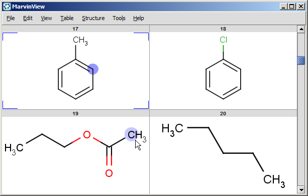
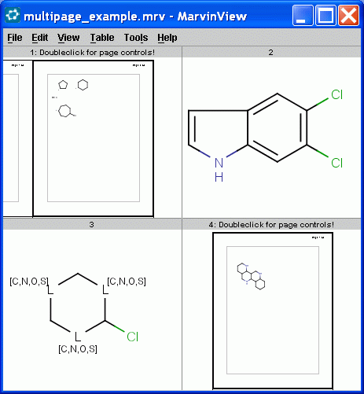

How To Use MarvinView Features
Table Of Contents
Loading Molecules into MarvinView
Marvin can open molecule files saved in any of the supported formats for viewing.
You can also take advantage of the Cut/Copy/Paste and Drag & Drop Functionality
of Marvin to move a molecule from another chemical drawing application into MarvinView.
Saving Molecules
MarvinView allows you to save an image of the molecule in the Viewer. You can
select from JPEG, PNG, PPM, POVRay, and SVG file types.
Because MarvinView is designed for viewing and not editing, you cannot save
into molecule format files from MarvinView. If you would like to edit and save
the molecule, you should launch a MarvinSketch window.
Printing Molecules
You can print the molecule using the Print item in either the
File Menu or the Pop-up Menu.
The Print dialog box contains two sets of options: first, you choose the structures
to print: all molecules, all visible molecules in the window or the selected molecule.
Second, you may choose print (send to printer), print to pdf file or see the print preview.
Editing Molecules
MarvinView is intended to be used mainly to display molecules. However, there
is a limited set of functionality available to edit the molecule while you view
it. To make major changes to the molecule, it can be opened in either a
MarvinSketch window or a Source window. In either case, the alterations made
can be imported back to the Viewer.
Editing Options in MarvinView
Marvin allows you to Clean your molecule in either 2D or 3D. This
will recalculate the coordinates of the atoms and bonds to the most
appropriate location, based on the type of cleaning you select. You
can set cleaning options via the Structure
> Clean submenu or from the Pop-up Menu.
You can toggle the display of rings as aromatic using the Structure
> Aromatic Form submenu.
Using the Misc submenu from the Edit
Menu or from the Pop-up Menu, you can toggle the display of options such as Atomic Symbols, Map Numbers, and E/Z steroconfiguration labels.
Editing in MarvinSketch
MarvinView allows you to launch a MarvinSketch window for editing the current molecule. By selecting Edit > Structure, the molecule will be opened in MarvinSketch.
While you are editing the molecule in the sketcher, you will be unable to use the viewer.
When you close the sketcher or use its Transfer button, you will be able to use the viewer again and all changes you have made in the sketcher will appear in the viewer.
Editing Source
Choosing Source from the Edit menu (in the Menubar or Pop-up Menu) opens the Edit Source window. The The Edit Source window opens the file for the current molecule as text. You can view and edit the molecule file in any of the supported formats (SMILES, molfile, XYZ, etc).
You can alter a molecule by directly editing its source in the
Edit Source Window. You can view and edit the source in any of the
supported file formats. To change format, simply select the desired
one from the Format
Menu. To reload the molecule described by the text in this window
into the MarvinSketch canvas (including any changes you may have
made), select File >
Import. This will close the Edit Source Window.
Structure Display Options
There is a wide range of functions related to the display of the
molecules. These settings can be found in the
View menu and in
the Preferences dialog. Additionally, you can move, rotate,
and zoom in/out on the structure.
Molecule Format
You can set the display format for the molecule and screen
resolution using the View
> Display submenu. Available molecule formats are
Wireframe, Wireframe
with Knobs, Sticks, Ball and Stick, and Spacefill.
You can set the resolution to low or high via the Quality
submenu.
Colors
The View >Colors
submenu allows you to specify the color
scheme of the molecules. The available options are:
Implicit/Explicit Hydrogens
Marvin has a number of options for the display of implicit and
explicit hydrogens. Because Marvin is chemically intelligent, it will
automatically add hydrogens as necessary within the structure.
They are called implicit hydrogen atoms, are always displayed without bonds and based on the options
set in the View menu. In case of Ball & Stick and Spacefill modes, the
impilcit Hydrogen atoms are never displayed.
To view all hydrogen atoms explicitly, displayed as atoms with bonds connected to
neighbors, chose Structure
> Add > Explicit H Atoms. The Structure
> Remove > Explicit H atoms will return to the previous display mode.
Marking Atoms
Hover the cursor over an atom and it will be marked by light blue circle. Clicking on it will select the atom in question and the circle will turn dark blue. At the same time, you can mark one atom, and select another one even if they are in different molecules.
A property change event is sent on every atom mark. See developer guide for details.

Error Highlighting
Marvin can not automatically correct all valence errors or any reaction errors. Instead,
these errors are highlighted and you may make the
appropriate corrections yourself.
This option can be enabled and disabled using the the Edit
> Preferences dialog window.
Saving Display Options
Many of the display settings in Marvin are saved and reloaded the next time you start the program.
Background color, molecule color scheme, and hydrogen visibility can be set
from the View menu and will be saved automatically when you exit the program.
Other options, including look & feel, error highlighting, and object visibility
can be set using the Preferences dialog window from
the Edit menu.
Manipulating the Molecule
You can translate, rotate, or resize the molecule on the canvas with a simple mouse drag.
The View Menu and Pop-up Menu both contains a Transform submenu that allows you to set the type of motion to apply to the molecule.
By Selecting Translate or Drag, dragging the mouse across the canvas will result in a same displacement of the molecule.
Selecting Zoom allows you to resize the molecule. Dragging the mouse upward will zoom out, dragging downward will zoom in.
Selecting Rotate in 2D allows you to rotate the molecule in 2D. The center of the molecule becomes the center of rotation and the molecule will rotate around this point in the direction of the mouse drag.
Selecting Rotate in 3D allows you to rotate the molecule in 3D around a point at the 3D center of the molecule.
If you select the Zoom/Rotate option and drag the mouse
on the canvas, you can zoom the content of the canvas and/or rotate it in 2D.
The View Menu and the Pop-up Menu also contains the Animation menu, which allows you to start and stop an automatic 3D rotation of the molecule.
How to Work with Multipage Molecular Document
Multipage molecular documents help to work with large drawings by dividing them into pages.
To use the navigation tools of multipage molecular document doubleclick on the choosen cell.

A new window will open and the following controls will automatically
appear on the window's interface:
- Pages menu on the menubar
- Navigation statusbar under the canvas
- Frame of pages, margin, title and page numbers on the canvas

The statusbar contains information about
the current page number in a textfield and the number of all pages on a label.
It also contains a collection of buttons to
aid your quick navigation in the document. You can go the the first, previous, next, and last page
using them. Alternatively you can go directly to a specific page
by entering a number in the text field and pressing enter.
|
Statusbar Elements
|
|
First page button
|
Clicking on the First page
button allows you to go to the first page of multipage molecular document.
|
|
Previous page button
|
Clicking on the Previous page
button allows you to go to the previous page of multipage molecular document.
|
|
Current page field
|
The Current page
textfield shows you the number of current page and allows
you to go to a specific page of multipage molecular document
by entering a number in the text field and pressing enter.
|
|
Next page button
|
Clicking on the
button allows you to go to the next page of multipage molecular document.
|
|
Last page button
|
Clicking on the Last page
button allows you to go to the last page of multipage molecular document.
|
|
All pages label
|
The All pages
label shows you the total number of pages in multipage molecular document.
|
All the navigation possibilities: go to first, previous, next, last, specific pages are available from
the Pages menu too
with some automatic page zooming functions.
Pages > Fit page height adjusts the height of the current page to the height of the canvas.
Pages > Fit page width adjusts the width of the current page to the width of the canvas.
Pages > Fit page adjusts the current page so that the whole current
page will be placed
centralized within the canvas.
Return to Top
Copyright © 1998-2012
ChemAxon Ltd.
http://www.chemaxon.com/marvin